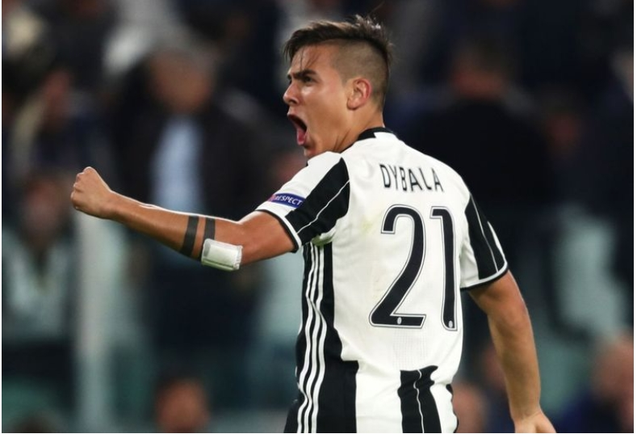

2003년 인스티투토에서 축구를 시작하였다. 2011년 1군팀으로 승격하였고, 38경기에 출장해 17골을 기록하며 두각을 나타내었다.
2012년 7월 20일 세리에 A US 팔레르모 이적이 확정되었다. 이적 후 첫시즌 27경기 3골을 기록하며 순조롭게 적응하였다. 2013/14 시즌에는 28경기 5골을 기록하며 팀의 세리에 A 승격에 공헌하였다. 2014/15 시즌 35경기 13골 13도움을 기록하며 26개의 공격 포인트를 기록하였다. 시즌 종료 후, 유벤투스 이적이 확정되었다.
